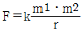
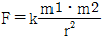
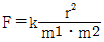
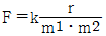
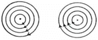
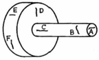
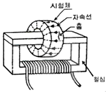
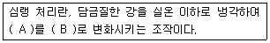
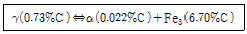

자기비파괴검사기능사 (2013-07-21 기출문제)
1과목: 자기탐상시험법
1. 비파괴검사법 중 핵연료봉과 같은 높은 방사성 물질의 내부결함검사에 가장 적합한 것은?
- 자분탐상시험
- 방사선투과시험
- 와전류탐상시험
- 중성자투과시험
(정답률: 61%)

2. 고속 자동탐상이 가능하고 표면 결함의 검출 능력이 우수하며 전도성 재료에 적용할 수 있는 비파괴검사법은?
- 자분탐상시험
- 음향방출시험
- 와전류탐상시험
- 초음파탐상시험
(정답률: 81%)
3. 자분탐상 시험원리와 자기적 성질에 대한 설명으로 옳은 것은?
- 투자율은 재질에 따라 다르다.
- 투자율은 자계의 세기에 관계없이 일정하다.
- 강자성체의 투자율은 비자성체에 비해 매우 작다.
- 자속밀도를 계측하여 음향신호로 변환시켜 결함을 평가한다.
(정답률: 67%)
4. 비파괴검사법 중 니켈 제품 표면의 피로균열검사에 가장 적합한 것은?
- 방사선투과검사
- 초음파탐상검사
- 자분탐상검사
- 누설검사
(정답률: 75%)
5. 누설검사에 이용되는 헬륨질량분석기의 구성요소가 아닌 것은?
- 이온포집장치
- 필라멘트
- 전자포획장치
- 자장영역
(정답률: 37%)
6. 기포누설시험에 사용되는 발포액의 구비조건으로 올바른 것은?
- 표면장력이 클 것
- 발포액 자체에 거품이 많을 것
- 유황성분이 많을 것
- 점도가 낮을 것
(정답률: 62%)
7. 시험체를 절단하거나 외력을 가하여 기계설계에 이상이 있는지를 증명하는 검사 방법을 무엇이라 하는가?
- 가압시험
- 위상분석시험
- 파괴시험
- 임피던스검사
(정답률: 74%)
8. 비파괴검사에서 봉(Bar) 내의 비금속 개재물을 무엇이라 하는가?
- 겹침
- 용락
- 언더컷
- 스트링거
(정답률: 64%)
9. 용제제거성 형광 침투탐상검사에 대한 설명이 맞는 것은?
- 현상법은 건식 현상법만 적용할 수 있다.
- 대형 부품, 구조물의 부분탐상에 적용할 수 있다.
- 시험면이 거친 것이라도 형광 휘도가 높기 때문에 적용이 가능하다.
- 침투시간은 다른 방법에 비해 길어야 한다.
(정답률: 65%)
10. 후유화성 형광침두 탐상검사시 가장 적합한 세척방법은?
- 솔벤트 세척
- 수 세척
- 알칼리 세척
- 초음파 세척
(정답률: 60%)
11. 방사선투과시험의 X선발생장치에서 관전류는 무엇에 의하여 조정되는가?
- 표적에 사용된 재질
- 양극와 음극사이의 거리
- 필라멘트를 통하는 전류
- X선 관구에 가해진 전압과 파형
(정답률: 34%)
12. 초음파탐상법에서 사용되는 경사각 탐촉자가 갖는 성질은?
- 교축점
- 분해능
- 불감대
- 굴절각
(정답률: 69%)
13. 와전류탐상검사(ECT)법으로 검사할 수 없는 것은?
- 불연속부 검사
- 재질검사
- 도막두께 검사
- 내구성검사
(정답률: 66%)
14. 초음파의 종파속도가 가장 빠르게 진행하는 대상물은?
- 철강
- 알루미늄
- 글리세린
- 아크릴수지
(정답률: 43%)
15. 자분탐상검사에서 떨어져 있는 2개의 점 자극 m1 및 m2의 사이에 거리는 r이라고 할 때 두 자극 사이에 작용하는 힘 F를 구하는 식은? (단, k는 비례상수이다.)




(정답률: 60%)
16. 철(Fe), 니켈(Ni), 코발트(Co)와 같은 천이 금속은 다음 중 어디에 속하는가?
- 반자성체
- 상자성체
- 강자성체
- 동소체
(정답률: 80%)
17. 아래 그림의 자장은 어떤 자화법에 의해 생긴 것인가?

- 극간법
- 프로드법
- 전류관통법
- 축통전법
(정답률: 46%)
18. 다음 중 검출효율이 증대되는 경우가 아닌 것은?
- 불연속의 깊이가 표면과 수직인 경우
- 개구된 표면으로부터 예리하고, 깊은 불연속인 경우
- 표면에서의 불연속의 길이가 가능한 한 긴 경우
- 불연속은 표면 개구의 폭과 비교하여 상대적으로 얕은 경우
(정답률: 39%)
19. 자분탐상 시험결과 나타난 지시의 관찰에 대한 설명으로 옳은 것은?
- 원칙적으로 자분모양이 형성된 직후에 관찰하여야 한다.
- 비형광 자분모양을 충분히 식별할 수 있는 밝기는 200Lx 이상이어야 한다.
- 형광자분모양을 식별하기 위하여 100Lx 이하의 어두운 곳에서 관찰하여야 한다.
- 형광자분모양을 충분히 식별하기 위해서 자외선등의 강도는 500μW/cm2 이상이어야 한다.
(정답률: 73%)
20. 시험체의 일부 또는 전체를 전자석 또는 영구자석의 자극사이에 접촉시켜 자화시키는 장치의 명칭은?
- 코일식 자화장치
- 극간식 자화장치
- 프로드식 자화장치
- 직각통전식 자화장치
(정답률: 71%)
2과목: 자기탐상관련규격
21. 다음 중 강자성체를 자화시 누설자속이 생기는 곳이 아닌 것은?
- 코일속에서 자화된 비자성체의 양 끝부분
- 자석으로 자화 시 철심의 접촉 부분
- 단면급변부가 있는 경우
- 두 시험체가 접합된 부분으로 투자율이 다른 경우
(정답률: 48%)
22. 다음 그림에서 결함 C를 검출하기에 가장 적합한 검사방법은?

- 축통전법(Head stock)을 이용한 원형자화
- 중심도체(Central Conductor)을 이용한 원형자화
- 코일을 이용한 선형자화
- 프로드(prod)을 이용한 원형자화
(정답률: 47%)
23. 자분탐상시험에서 자속밀도의 단위로 옳은 것은?
- Ampere[A]
- Weber[Wb]
- Joule[J]
- Henry[H]
(정답률: 56%)
24. 자분탐상시험시 탈자 여부를 확인하는데 이용되지 않는 것은?
- 자장계
- 나침반
- 얇은 철편
- 원심형 튜브
(정답률: 64%)
25. 자분탐상시험 장치 중 비접촉법에 의한 자화 기기는?
- 프로드법 장비
- 축통전법 장비
- 극간(yoke)법 장비
- 코일(coil)법 장비
(정답률: 53%)
26. 원형자화법에 속하지 않는 자화방법은?
- 직각통전법
- 자속관통법
- 프로드법
- 코일법
(정답률: 52%)
27. 다음 중 국부가열로 인하여 불규칙적으로 체크무늬모양의 미세한 선으로 나타나는 균열은?
- 열영향부 균열
- 열처리 균열
- 피로 균열
- 연마 균열
(정답률: 56%)
28. 철강재료의 자분탐상 시험방법 및 자분모양의 분류(KS D 0213)에서 A형 표준시험편의 용도로 틀린 것은?
- 자분 및 검사액의 성능 조사
- 시험조작의 적부 조사
- 유효자계의 강도 및 방향의 적부 조사
- 잔류자장의 측정
(정답률: 38%)
29. 철강재료의 자분탐상 시험방법 및 자분모양의 분류(KS D 0213)에서 허용하고 있는 A1-15/50(직선형)의 인공 홈의 깊이는 C형 시험편의 인공 흠의 깊이에 비해 최대 몇 배까지 사용이 가능한가?
- 약 2.1배
- 약 2.4배
- 약 2.7배
- 약 3.1배
(정답률: 59%)
30. 철강재료의 자분탐상 시험방법 및 자분모양의 분류(KS D 0213)에 따라 탈자후 재시험, 잔류법으로 재시험 또는 시험면을 매끈하게 한 후 재시험하여도 자분모양이 사라지지 않았다면 다음 중 이 의사모양 지시는?
- 자기펜자국
- 전류지시
- 표면거칠기 지시
- 재질 경계지시
(정답률: 29%)
31. 항공 우주용 자기탐상 검사방법(KS W 4041)에서 검사를 하여 합격한 제품에 대한 식별 표시 중 틀린 설명은?
- 착색을 하는 경우에는 녹색 염료를 사용하여야 한다.
- 각인을 용접품에 실시하는 경우에는 용접 비드 위에 하여야 한다.
- 에칭, 각인 등이 어려운 부품에는 태그 등을 부착 적용해도 좋다.
- 에칭을 실시하는 경우에는 기호문자 M으로 표시하되 부품에 유해해서는 안 된다.
(정답률: 38%)
32. 철강재료의 자분탐상 시험방법 및 자분모양의 분류(KS D 0213)에서 규정하는 자분모양에 관한 설명 중 틀린 것은?
- 길이가 20mm이고 나비가 4mm인 자분모양은 선상자분 모양이다.
- 독립한 자분모양 중 원형상의 자분모양 이외의 것을 선상자분모양이라 한다.
- 일정한 면적 내에 여러 개의 자분모양이 분산하여 존재하는 자분모양을 연속한 자분모양이라 한다.
- 길이가 10mm이고 나비가 4mm 자분모양은 원형상의 자분모양으로 분류된다.
(정답률: 43%)
33. 압력 용기-비파괴 시험 일반(KS B 6752)에 따른 직접통전법에서 전류 흐름과 직각인 평면에서 최대 단면의 대각선이 10mm이라면 사용할 자화전류 값으로 가장 적합한 것은?
- 50A
- 100A
- 200A
- 400A
(정답률: 36%)
34. 철강재료의 자분탐상 시험방법 및 자분모양의 분류(KS D 0213)에서 용접부의 그루브면 등 좁은 부분에 사용하며 권위 있는 기관에서 검정을 받아야 하는 시험편은?
- A1형 표준시험편
- A2형 표준시험편
- B형 대비시험편
- C형 표준시험편
(정답률: 49%)
35. 철강재료의 자분탐상 시험방법 및 자분모양의 분류(KS D 0213)에서 자분의 탐상 성능을 알기 위한 지성 측정방법으로 다음 중 틀린 것은?
- 광학 현미경에 의한 입도 크기를 구하는 방법
- 자기 히스테리시스 곡선을 구하는 방법
- 자기 천칭을 사용하는 방법
- 솔레노이트 코일을 사용하는 방법
(정답률: 51%)
36. 철강재료의 자분탐상 시험방법 및 자분모양의 분류(KS D 0213)에서 그림과 같은 자화방법을 무엇이라 하는가?

- 자속관통법
- 코일법
- 축통전법
- 전류관통법
(정답률: 57%)
37. 압력 용기-비파괴 시험 일반(KS B 6752)에 따른 최적의 프로드 간격은?
- 70mm
- 150mm
- 250mm
- 300mm
(정답률: 45%)
38. 철강재료의 자분탐상 시험방법 및 자분모양의 분류(KS D 0213)의 A형 표준시험편에 대한 설명으로 옳은 것은?
- A2 표준시험편은 A1 표준시험편보다 높은 유효자계의 강도로 자분모양이 나타난다.
- A2 표준시험편은 A1 표준시험편보다 낮은 유효자계의 강도로 자분모양이 나타난다.
- A2 표준시험편과 A1 표준시험편은 판 두께만 다르고 인공 흠의 모양은 직선형으로 모두 같다.
- A2 표준시험편과 A1 표준시험편은 인공 흠의 깊이, 판 두께 및 흠의 모양은 모두 같다.
(정답률: 57%)
39. 철강재료의 자분탐상 시험방법 및 자분모양의 분류(KS D 0213)에 따른 자분탐상시험에서 시행되는 표준시험편은?
- A형 표준시험편 1종만 있다.
- A형 및 C형 표준시험편 2종이 있다.
- A형, B형, C형 표준시험편 3종이 있다.
- A형, B형, C형, D형 표준시험편 4종이 있다.
(정답률: 44%)
40. 철강재료의 자분탐상 시험방법 및 자분모양의 분류(KS D 0213)에서 시험체의 국부에 2개의 각기 다른 전극을 대어서 전류를 흐르게 하는 자화방법은?
- 축통전법
- 코일법
- 프로드법
- 극간법
(정답률: 54%)
3과목: 금속재료일반 및 용접일반
41. 철강재료의 자분탐상 시험방법 및 자분모양의 분류(KS D 0213)에서 자분모양의 분류에 대한 설명 중 틀린 것은?
- 자분모양의 분류는 “자분적용 → 전처리 → 자화 → 자분모양의 관찰”의 순서로 흠을 검출한 후에 실시한다.
- 자분모양의 분류는 시험면에 생긴 자분모양이 의사모양이 아닌 것을 확인한 다음에 실시한다.
- 독립한 자분모양은 선상과 원형상의 2종류로 분류된다.
- 거의 동일 직선상에 연속으로 존재하고 서로의 거리가 2mm이하인 자분모양은 연속한 자분모양으로 분류된다.
(정답률: 78%)
42. 철강재료의 자분탐상 시험방법 및 자분모양의 분류(KS D 0213)에 따른 자분탐상시험의 설명 중 틀린 것은?
- 잔류법을 사용한 경우 관찰이 끝날 때까지 시험면이 다른 시험체를 접촉해서는 안된다.
- 전류지시는 전류를 크게 하거나 연속법으로 재시험하면 자분모양이 사라진다.
- 자기펜자국은 탈자 후 재시험하면 자분모양이 사라진다.
- 표면거칠기 지시는 시험면을 매끈하게 하여 재시험하면 자분모야잉 사라진다.
(정답률: 45%)
43. 다음 중 중금속에 해당되는 것은?
- Al
- Mg
- Cu
- Be
(정답률: 45%)
44. 기지 금속 중에 0.01~0.1μm 정도의 산화물 등 미세한 입자를 균일하게 분포시킨 재료로 고온에서 크리프 특성이 우수한 고온 내열 재료는?
- 서멧 재료
- FRM 재료
- 클래드 재료
- TD Ni 재료
(정답률: 35%)
45. 다음의 철광석 중 자철광을 나타낸 화학식으로 옳은 것은?
- Fe2O3
- Fe3O4
- Fe2CO3
- Fe2O3ㆍ3H2O
(정답률: 57%)
46. Al-Mg계 합금에 대한 설명 중 틀린 것은?
- Al-Mg계 합금은 내식성 및 강도가 우수하다.
- Al-Mg계 평형상태도에서는 450℃에서 공정을 만든다.
- Al-Mg계 합금에 Si를 0.3% 이상 첨가하여 연성을 향상시킨다.
- Al에 4~10%Mg 까지 함유한 강을 하이드로날륨이라 한다.
(정답률: 46%)
47. 보기는 강의 심랭 처리에 대한 설명이다. (A), (B)에 들어갈 용어로 옳은 것은?

- (A) : 잔류 오스테나이트, (B) : 마텐자이트
- (A) : 마텐자이트, (B) : 베이나이트
- (A) : 마텐자이트, (B) : 소르바이트
- (A) : 오스테나이트, (B) : 펄라이트
(정답률: 59%)
48. 마그네슘 및 마그네슘 합금의 성질에 대한 설명으로 옳은 것은?
- Mg의 열전도율은 Cu와 Al보다 높다.
- Mg의 전기전도율은 Cu와 Al보다 높다.
- Mg합금보다 Al합금의 비강도가 우수하다.
- Mg는 알칼리에 잘 견디나, 산이나 영수에는 침식된다.
(정답률: 60%)
49. Fe-C 평형상태도에서 보기와 같은 반응식은?

- 포정반응
- 편정반응
- 공정반응
- 공석반응
(정답률: 41%)
50. Pb계 청동 합금으로 주로 항공기, 자동차용의 고속베어링으로 많이 사용되는 것은?
- 켈밋
- 톰백
- Y합금
- 스테인리스
(정답률: 60%)
51. 주철의 조직을 C와 Si의 함유량과 조직의 관계로 나타낸 것은?
- 하드필드강
- 마우러조직도
- 불스 아이
- 미하나이트주철
(정답률: 62%)
52. 탄소강 재료에 포함된 5대 원소가 아닌 것은?
- C
- P
- Mn
- Al
(정답률: 69%)
53. 7-3황동에 Sn을 1% 첨가한 합금으로, 전연성이 좋아 관 또는 판으로 제작하여 증발기, 열교환기 등에 사용되는 합금은?
- 에드미럴티 황동
- 네이벌 황동
- 톰백
- 망간 황동
(정답률: 65%)
54. 열처리로에 사용하는 분위기 가스 중 불활성 가스로만 짝지어진 것은?
- NH3, Co
- He, Ar
- O2, CH4
- N2, CO2
(정답률: 69%)
55. 다음 중 고 투자율의 자성합금은?
- 화이트 메탈
- 바이탈륨
- 하스텔로이
- 퍼멀로이
(정답률: 42%)
56. 순철에서 동소 변태가 일어나는 온도는 약 몇 ℃인가?
- 210℃
- 700℃
- 912℃
- 1600℃
(정답률: 53%)
57. 만능 재료시험기로 인장 시험을 할 경우 값을 구할 수 없는 금속의 기계적 성질은?
- 인장강도
- 항복강도
- 충격값
- 연신율
(정답률: 49%)
58. 일반적으로 용접시 발생하는 잔류응력의 제거방법이 아닌 것은?
- 저온 응력 완화법
- 국부 풀림법
- 고온 응력 제거법
- 노내 풀림법
(정답률: 38%)
59. 아크 전류가 200A, 아크 전압이 25V, 용접속도가 15cm/min인 경우 용접 입열은 몇 J/cm인가?
- 15000
- 20000
- 25000
- 30000
(정답률: 28%)
60. 산소-아세틸렌가스 용접기로 50A 강관을 V형 맞대기 용접하고자 할 때, 산소와 아세틸렌 가스의 사용압력은 얼마정도로 조정하여야 적합한가?
- 산소 : 0.3~0.4MPa, 아세틸렌 : 0.1~0.3MPa
- 산소 : 0.3~0.4MPa, 아세틸렌 : 0.01~0.03MPa
- 산소 : 0.03~0.04MPa, 아세틸렌 : 0.01~0.03MPa
- 산소 : 0.03~0.04MPa, 아세틸렌 : 0.1~0.3MPa
(정답률: 49%)